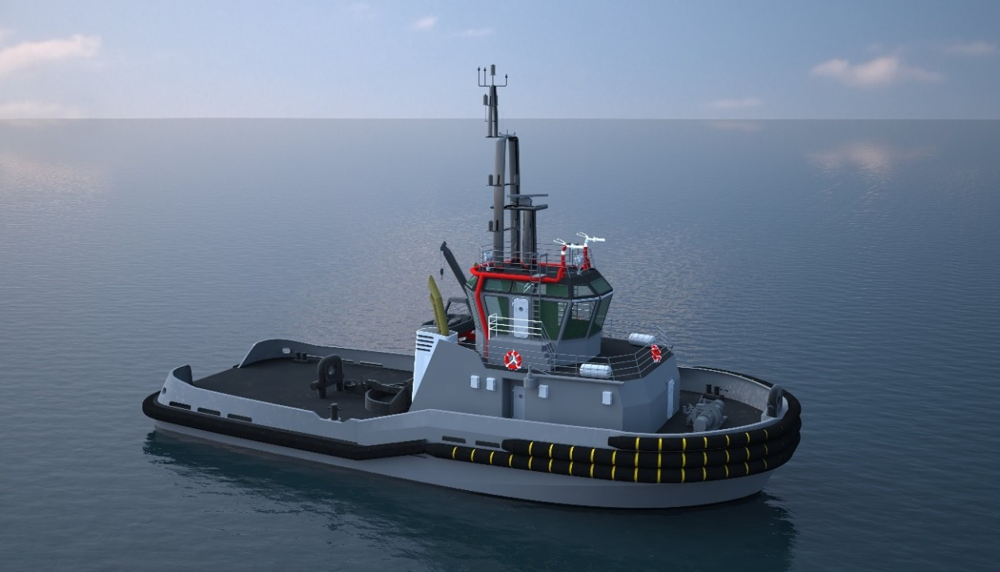

亮相领先海事电气化平台
通用能源自豪地宣布，我们的革命性混合动力拖船技术在欧洲领先的电动出行和海事电气化平台Electrive上获得专题报道。这一认可凸显了我们致力于推进可持续海洋运输解决方案的承诺。
该专题展示了我们在混合动力推进系统方面的创新方法，这些系统正在改变全球港口运营，展示了传统海事主力如何为可持续未来重新构想。
混合动力拖船技术概述
我们的混合动力拖船代表了海事推进的范式转变，结合了传统柴油动力的可靠性与电力推进的效率和环境优势：
双推进系统
柴油和电力的无缝集成，实现最大运营灵活性
先进能量存储
高容量锂离子电池系统，延长电力运营时间
智能发电机
变速柴油发电机，为充电和峰值功率需求优化
智能控制
AI驱动的能源管理系统，实现最佳效率和性能

技术规格
总长
30 - 40米
型宽
12 - 14米
电力功率
2 x 300kW电动机
柴油备用
2 x 400kW柴油发动机
电池容量
800 - 1200 kWh
系柱拉力
60 - 80吨
电力航程
8小时连续运行
混合航程
发电机支持下无限
运营优势
混合动力拖船设计相比传统纯柴油船舶提供显著优势：
- 燃油效率： 通过优化混合运营，燃油消耗降低高达40%
- 减排： 显著减少氮氧化物、硫氧化物和颗粒物排放
- 静音运营： 纯电模式实现敏感港区的安静运营
- 峰值功率输出： 结合柴油和电力，在需要时提供最大系柱拉力
- 运营灵活性： 电力和柴油模式之间无缝切换
- 减少维护： 电力推进组件降低维护需求
- 未来合规性： 为日益严格的排放法规做好准备
智能能源管理
我们混合动力拖船的核心是先进的能源管理系统(EMS)，根据运营需求持续优化电力分配：
电力优先模式
在拥挤港区使用电力推进进行精确、安静的操纵
混合效率模式
在较长转运作业期间优化燃油消耗
最大功率模式
结合柴油和电力，实现最大系柱拉力能力
电池充电模式
高效充电电池，同时保持即时部署准备状态
市场认可与影响
在Electrive上的专题报道代表了行业对GEES在海事电气化创新方面的重要认可。作为欧洲最受尊敬的电动出行平台之一，Electrive的报道验证了我们的技术方法和市场定位。
这一认可正值关键时刻，全球港口正在实施更严格的环境法规，并为其运营寻求可持续解决方案。我们的混合动力拖船技术直接应对这些挑战，同时保持港口运营者依赖的运营能力。
全球实施战略
随着对我们Electrive专题的积极回应，GEES正在加速混合动力拖船技术的全球推广：
定制设计
为特定港口需求和运营概况量身定制解决方案
全球认证
与全球海事当局合作，快速获得认证批准
性能保证
全面的性能保证，确保运营可靠性
全生命周期支持
完整的全生命周期支持，包括培训、维护和升级
环境影响与可持续性
混合动力拖船代表了向可持续港口运营迈出的重要一步。通过减少排放同时保持运营能力，这些船舶帮助港口实现环境目标而不影响效率。
早期采用者报告港区内空气质量显著改善，噪音污染减少，通过提高燃油效率和减少维护需求实现显著成本节约。
展望未来
Electrive专题标志着混合动力拖船技术更广泛行业采用的开始。GEES继续投资研发，计划为特定应用开发全电动拖船，并为未来运营需求开发自主能力。
随着海事行业继续向可持续性转型，GEES仍然致力于提供满足环境要求和运营要求的实用、可靠解决方案。